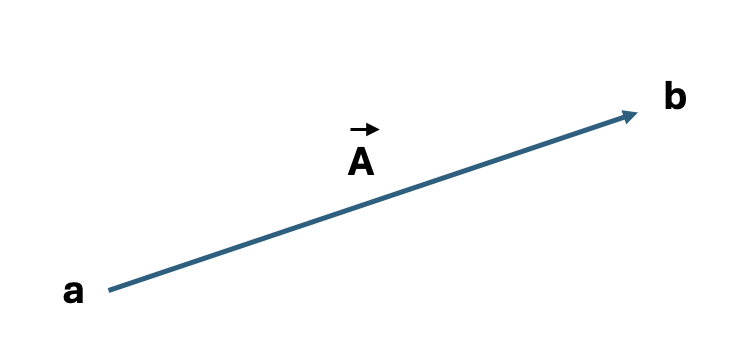
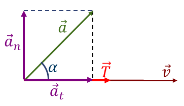
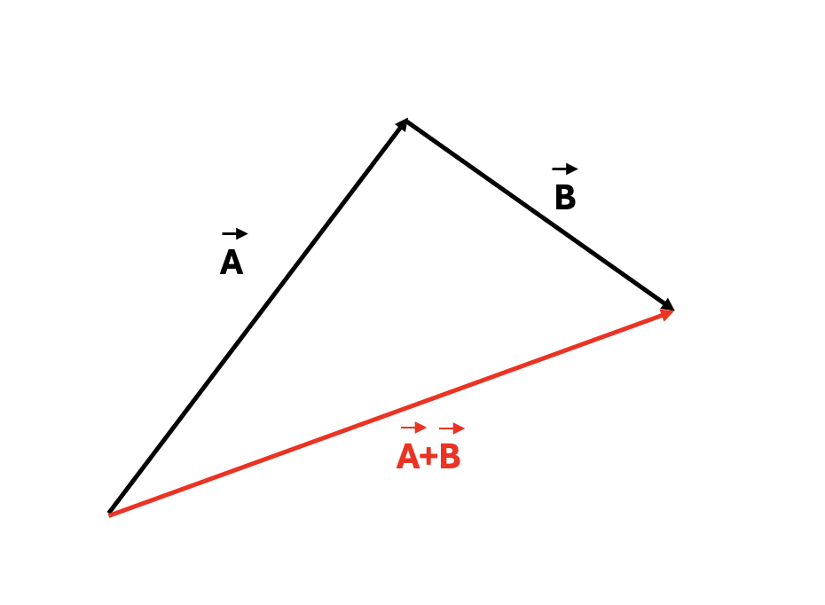
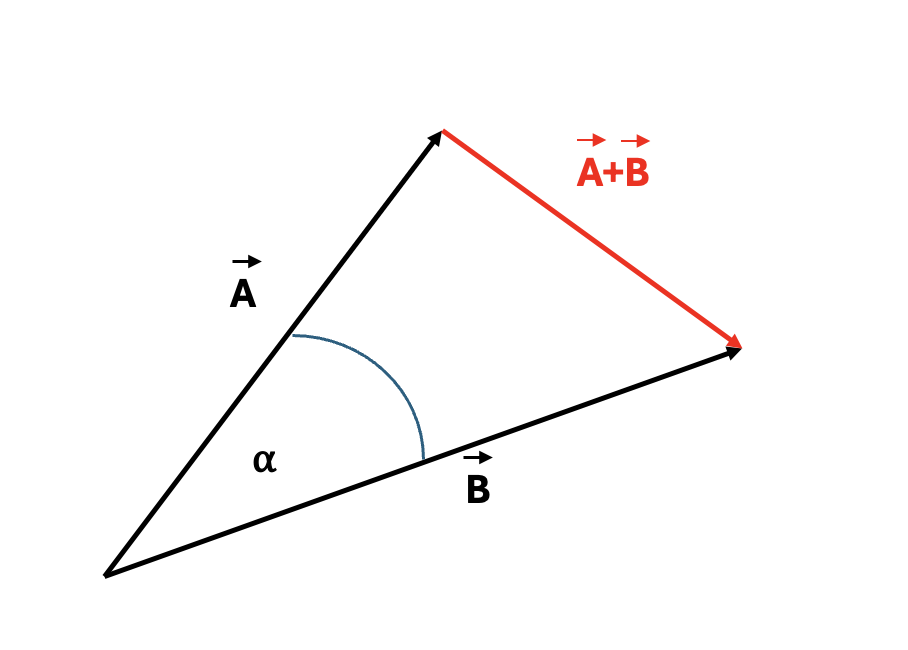
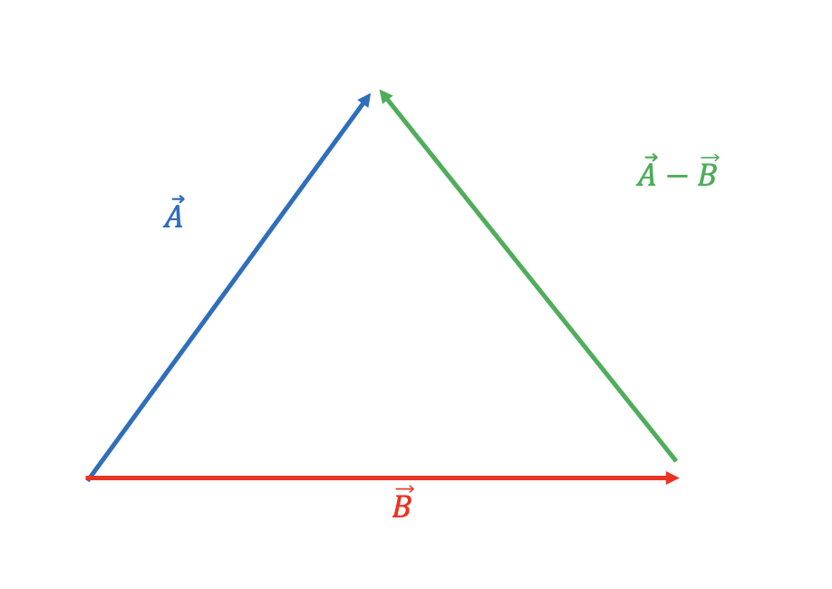
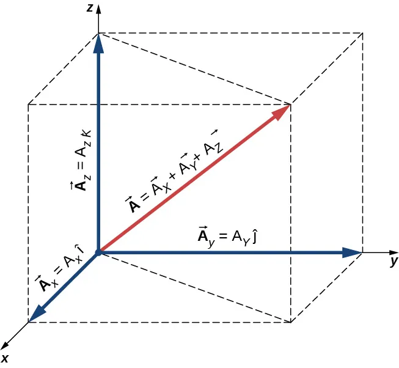
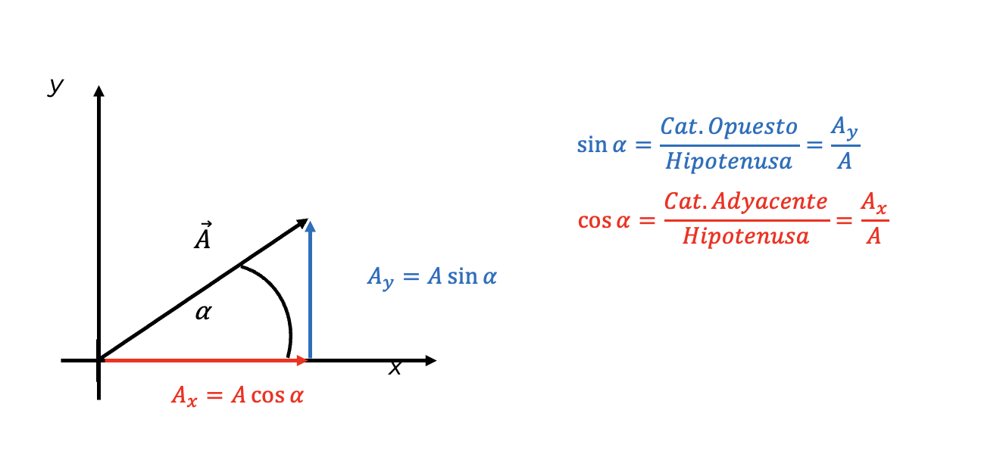
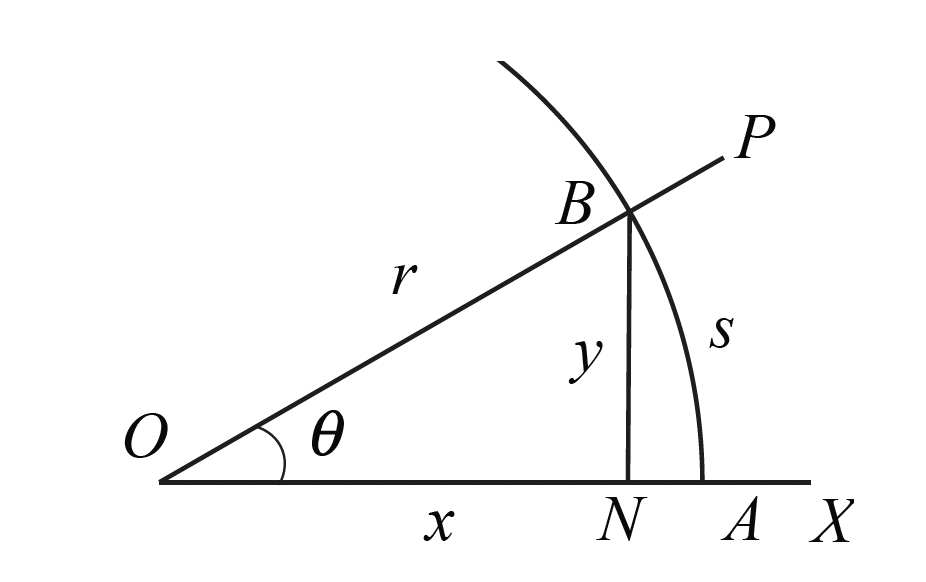
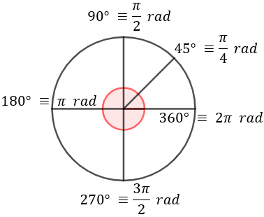
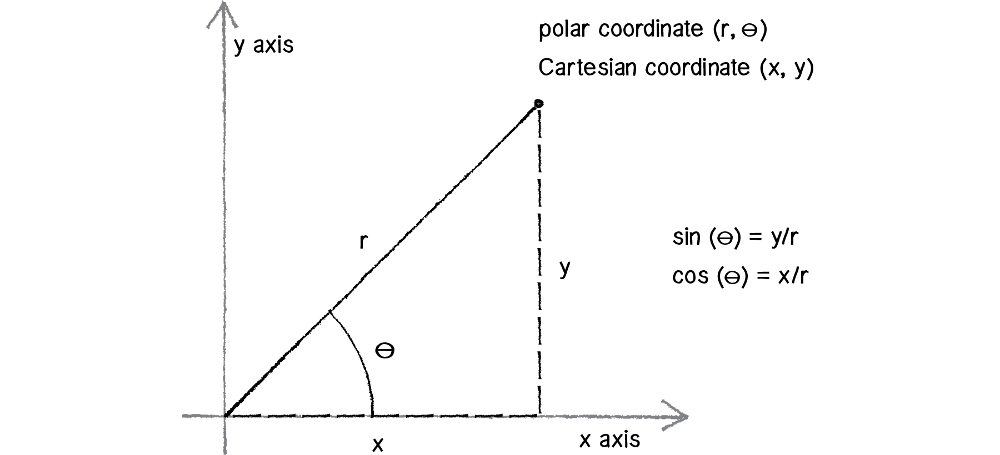

Unidad 1: Sistema de unidades, magnitudes y vectores#
Descripción general#
Esta unidad introduce el lenguaje básico de la física mecánica: la medición de magnitudes físicas, el uso correcto de unidades y la representación matemática de cantidades vectoriales. Se estudia el Sistema Internacional de Unidades, la conversión entre sistemas, el análisis dimensional y las operaciones fundamentales con vectores.
Objetivo de aprendizaje#
Al finalizar esta unidad, el estudiante será capaz de:
Identificar magnitudes físicas fundamentales y derivadas.
Expresar correctamente cantidades físicas en el Sistema Internacional.
Realizar conversiones de unidades.
Aplicar análisis dimensional para verificar ecuaciones físicas.
Distinguir entre magnitudes escalares y vectoriales.
Representar y operar vectores en forma gráfica y analítica.
1. Introducción a la física y la medición#
La física estudia los fenómenos naturales y busca describirlos mediante leyes y modelos matemáticos. Para ello, toda observación debe expresarse a través de una magnitud y su unidad.
Medir una magnitud significa compararla con un patrón previamente definido. Por eso, en mecánica es indispensable trabajar con sistemas de unidades consistentes.
2. Magnitudes físicas#
Magnitudes escalares#
Son aquellas que quedan completamente descritas por un número y una unidad.
Ejemplos:
masa
tiempo
temperatura
energía
longitud
Magnitudes vectoriales#
Son aquellas que requieren:
magnitud
dirección
sentido
Ejemplos:
desplazamiento
velocidad
aceleración
fuerza
3. Sistema Internacional de Unidades (SI)#
El sistema de unidades más utilizado en ciencia e ingeniería es el Sistema Internacional de Unidades (SI).
Magnitudes fundamentales más importantes en mecánica#
Magnitud |
Unidad SI |
Símbolo |
|---|---|---|
Longitud |
metro |
m |
Masa |
kilogramo |
kg |
Tiempo |
segundo |
s |
Magnitudes derivadas frecuentes en mecánica#
Magnitud |
Unidad SI |
Símbolo |
|---|---|---|
Velocidad |
metro por segundo |
m/s |
Aceleración |
metro por segundo cuadrado |
m/s² |
Fuerza |
newton |
N |
Energía |
joule |
J |
Frecuencia |
hertz |
Hz |
Relación entre algunas unidades derivadas#
Velocidad: \(m/s\)
Aceleración: \(m/s^2\)
Fuerza: \(kg \cdot m/s^2\)
Energía: \(kg \cdot m^2/s^2\)
4. Notación científica y prefijos#
Se utilizan potencias de 10 para escribir cantidades muy grandes o muy pequeñas.
Ejemplos:
\(1 \text{ km} = 10^3 \text{ m}\)
\(1 \text{ cm} = 10^{-2} \text{ m}\)
\(1 \text{ mm} = 10^{-3} \text{ m}\)
Prefijos comunes#
Prefijo |
Símbolo |
Factor |
|---|---|---|
kilo |
k |
\(10^3\) |
centi |
c |
\(10^{-2}\) |
mili |
m |
\(10^{-3}\) |
micro |
\(\mu\) |
\(10^{-6}\) |
nano |
n |
\(10^{-9}\) |
5. Conversión de unidades#
Las conversiones consisten en expresar una misma cantidad en unidades diferentes sin alterar su valor físico.
Tabla general de unidades SI para conversiones#
Unidades base del SI#
Magnitud |
Unidad SI |
Símbolo |
|---|---|---|
longitud |
metro |
m |
masa |
kilogramo |
kg |
tiempo |
segundo |
s |
corriente eléctrica |
amperio |
A |
temperatura termodinámica |
kelvin |
K |
cantidad de sustancia |
mol |
mol |
intensidad luminosa |
candela |
cd |
Unidades derivadas frecuentes#
Magnitud derivada |
Unidad SI |
Símbolo |
Expresión en unidades base |
|---|---|---|---|
área |
metro cuadrado |
m² |
\(m^2\) |
volumen |
metro cúbico |
m³ |
\(m^3\) |
velocidad |
metro por segundo |
m/s |
\(m \cdot s^{-1}\) |
aceleración |
metro por segundo cuadrado |
m/s² |
\(m \cdot s^{-2}\) |
fuerza |
newton |
N |
\(kg \cdot m \cdot s^{-2}\) |
trabajo / energía |
joule |
J |
\(kg \cdot m^2 \cdot s^{-2}\) |
potencia |
watt |
W |
\(kg \cdot m^2 \cdot s^{-3}\) |
presión |
pascal |
Pa |
\(kg \cdot m^{-1} \cdot s^{-2}\) |
frecuencia |
hertz |
Hz |
\(s^{-1}\) |
carga eléctrica |
coulomb |
C |
\(A \cdot s\) |
diferencia de potencial |
volt |
V |
\(kg \cdot m^2 \cdot s^{-3} \cdot A^{-1}\) |
Prefijos SI más usados#
Prefijo |
Símbolo |
Factor |
|---|---|---|
giga |
G |
\(10^9\) |
mega |
M |
\(10^6\) |
kilo |
k |
\(10^3\) |
hecto |
h |
\(10^2\) |
deca |
da |
\(10^1\) |
deci |
d |
\(10^{-1}\) |
centi |
c |
\(10^{-2}\) |
mili |
m |
\(10^{-3}\) |
micro |
µ |
\(10^{-6}\) |
nano |
n |
\(10^{-9}\) |
pico |
p |
\(10^{-12}\) |
Equivalencias rápidas#
Conversión |
Equivalencia |
|---|---|
longitud |
\(1 \text{ km} = 10^3 \text{ m}\) |
longitud |
\(1 \text{ cm} = 10^{-2} \text{ m}\) |
longitud |
\(1 \text{ mm} = 10^{-3} \text{ m}\) |
masa |
\(1 \text{ g} = 10^{-3} \text{ kg}\) |
tiempo |
\(1 \text{ min} = 60 \text{ s}\) |
tiempo |
\(1 \text{ h} = 3600 \text{ s}\) |
volumen |
\(1 \text{ L} = 10^{-3} \text{ m}^3\) |
área |
\(1 \text{ cm}^2 = 10^{-4} \text{ m}^2\) |
volumen |
\(1 \text{ cm}^3 = 10^{-6} \text{ m}^3\) |
velocidad |
\(1 \text{ km/h} \approx 0.278 \text{ m/s}\) |
Idea central#
Se multiplica por un factor de conversión equivalente a 1.
Ejemplo:
Si queremos convertir \(72 \text{ km/h}\) a \(\text{m/s}\):
Truco
Escribir siempre las unidades
Cancelar unidades paso a paso
Revisar que la unidad final sea la pedida.
6. Análisis dimensional#
El análisis dimensional permite verificar si una ecuación física es consistente desde el punto de vista de sus dimensiones.
Dimensiones fundamentales en mecánica#
longitud: \(L\)
masa: \(M\)
tiempo: \(T\)
Ejemplos#
velocidad: \([v] = L*T^{-1}\)
aceleración: \([a] = LT^{-2}\)
fuerza: \([F] = MLT^{-2}\)
energía: \([E] = ML^2T^{-2}\)
Aplicación#
Si una ecuación no tiene las mismas dimensiones en ambos lados, entonces no puede ser correcta físicamente.
Ejemplo:
Dimensionalmente:
Por lo tanto, la expresión es consistente.
7. Introducción a los vectores#
Un vector es una cantidad que tiene magnitud, dirección y sentido.
Notación:
\(\vec{A}\)
\(\vec{a}\)
\(\vec{AB}\)
Se representa gráficamente por una flecha.
El largo representa la magnitud.
La orientación representa la dirección.
La punta indica el sentido.
{kind=link}

Figura 1 Vector A, desde el punto a, al punto b#
Ejemplos físicos de vectores#
desplazamiento
velocidad
aceleración
fuerza
{kind=link}

Figura 2 Vector de Tensión (\(\vec{T}\)) y Vector de Velocidad (\(\vec{V}\))#
8. Propiedades de los vectores#
Igualdad de vectores#
Dos vectores son iguales si tienen:
la misma magnitud;
la misma dirección;
el mismo sentido.
Vector nulo#
Es el vector de magnitud cero.
Vector opuesto#
Si \(\vec{A}\) es un vector, entonces su opuesto es \(-\vec{A}\).
Ambos tienen la misma magnitud, pero sentidos opuestos.
9. Suma de vectores#
Método punta-cola#
Para sumar dos vectores:
se dibuja el primero
se coloca el origen del segundo en la punta del primero
el vector resultante va desde el origen del primero hasta la punta del segundo.
{kind=link}

Figura 3 Suma de los vectores A y B#
Método del paralelogramo#
Si ambos vectores parten del mismo punto, la diagonal del paralelogramo formado representa la suma.
{kind=link}

Figura 4 Suma de los vectores A y B#
Propiedades#
conmutativa: \(\vec{A} + \vec{B} = \vec{B} + \vec{A}\)
asociativa: \((\vec{A} + \vec{B}) + \vec{C} = \vec{A} + (\vec{B} + \vec{C})\)
10. Resta de vectores#
Restar un vector equivale a sumar su opuesto:
Gráficamente, se invierte el sentido de \(\vec{B}\) y luego se suma.
{kind=link}

Figura 5 Resta de los vectores A y B#
11. Multiplicación de un vector por un escalar#
Si \(c\) es un número real y \(\vec{A}\) es un vector:
es un nuevo vector cuya magnitud es \(|c|\) veces la de \(\vec{A}\).
Si \(c > 0\), conserva el sentido.
Si \(c < 0\), cambia de sentido.
12. Sistemas de coordenadas#
Para describir vectores en forma analítica se utiliza un sistema de coordenadas.
{kind=link}

Figura 6 Vector descrito de forma anlítica en el sistema de coordenadas 3D#
Coordenadas cartesianas en 2D#
Un vector puede escribirse como:
donde:
\(A_x\) es la componente en el eje \(x\);
\(A_y\) es la componente en el eje \(y\);
\(\hat{i}\) y \(\hat{j}\) son vectores unitarios.
En 3D#
13. Magnitud de un vector#
Para un vector en dos dimensiones:
Para un vector en tres dimensiones:
14. Dirección de un vector en el plano#
Si un vector forma un ángulo \(\alpha\) con el eje \(x\) positivo, entonces:
{kind=link}

Figura 7 Descomposición de un vector#
Y también:
Esto permite pasar entre forma polar y forma cartesiana.
15. Vector unitario#
Un vector unitario tiene magnitud 1 y sirve para indicar dirección.
Si \(\vec{A}\) es un vector, su vector unitario asociado es:
16. Descomposición de vectores#
Todo vector puede descomponerse en sus componentes sobre los ejes coordenados.
Si conocemos su magnitud \(A\) y su ángulo \(\theta\):
Esta idea es fundamental para el resto del curso, porque permite analizar movimientos y fuerzas en distintas direcciones por separado.
Los vectores pueden descomponerse en componentes que son perpendiculares entre sí, usualmente en las direcciones \(x\) y \(y\). Esto permite analizar movimientos y fuerzas en distintas direcciones por separado.
{kind=link}

Figura 8 Diagrama de relaciones trigonometricas#
Radianes#
Para trabajar con ángulos en física y matemáticas es muy común usar radianes en lugar de grados.
Un radián se define como el ángulo que subtiende un arco de circunferencia cuya longitud es igual al radio.
La relación entre grados y radianes es:
De aquí se obtienen conversiones útiles:
\(360^\circ = 2\pi \text{ rad}\)
\(90^\circ = \frac{\pi}{2} \text{ rad}\)
\(45^\circ = \frac{\pi}{4} \text{ rad}\)
\(30^\circ = \frac{\pi}{6} \text{ rad}\)
Para convertir de grados a radianes:
Para convertir de radianes a grados:
{kind=link}

Figura 9 Ángulos a radianes#
Coordenadas polares#
Además de expresar un vector mediante sus componentes cartesianas, también puede describirse mediante su magnitud y su ángulo respecto del eje \(x\) positivo. Esta forma corresponde a la representación en coordenadas polares.
Un vector en el plano puede representarse como:
donde:
\(A\) es la magnitud del vector;
\(\theta\) es el ángulo medido desde el eje \(x\) positivo.
La relación entre coordenadas polares y cartesianas es:
Y en sentido inverso:
Las coordenadas polares son especialmente útiles para describir vectores cuando se conoce directamente su magnitud y dirección, por ejemplo en problemas de desplazamiento, velocidad o fuerza aplicada con un cierto ángulo.
{kind=link}

Figura 10 Coordenadas polares#
Ejemplo: suma de vectores en coordenadas polares#
Supongamos que queremos sumar los siguientes dos vectores:
donde la primera componente representa la magnitud y la segunda el ángulo medido desde el eje \(x\) positivo.
Paso 1: convertir cada vector a coordenadas cartesianas#
Para el vector \(\vec{A}\):
Por lo tanto,
Para el vector \(\vec{B}\):
Por lo tanto,
Paso 2: sumar las componentes cartesianas#
Entonces el vector resultante es:
Paso 3: convertir el resultado a coordenadas polares#
La magnitud del vector resultante es:
El ángulo del vector resultante es:
Resultado final#
La suma de los vectores es aproximadamente:
Conclusión#
Para sumar vectores dados en coordenadas polares, normalmente se sigue este procedimiento:
convertir cada vector a coordenadas cartesianas;
sumar las componentes en \(x\) y en \(y\);
convertir el resultado nuevamente a coordenadas polares, si se desea expresar así.
Truco
Los vectores no se suman directamente en forma polar componente a componente como sí ocurre en forma cartesiana. Por eso casi siempre se pasa primero a \(x\) e \(y\).
17. Aplicaciones básicas en física#
En mecánica, los vectores permiten describir de forma rigurosa:
La posición de una partícula.
El desplazamiento entre dos puntos.
La velocidad en el plano.
La aceleración.
La fuerza neta sobre un cuerpo.
18. Síntesis de la unidad#
En esta unidad se introdujo el lenguaje fundamental de la mecánica:
El uso correcto de unidades.
La notación científica.
Las conversiones.
El análisis dimensional.
La diferencia entre escalares y vectores.
La representación y operaciones con vectores.
Estos contenidos serán la base para estudiar posteriormente el movimiento en una y dos dimensiones.
Conceptos clave#
magnitud física
unidad
Sistema Internacional
notación científica
prefijo
conversión de unidades
dimensión
escalar
vector
componente
vector unitario
Fórmulas clave#
Guía asociada#
Guía 1: Unidades y vectores